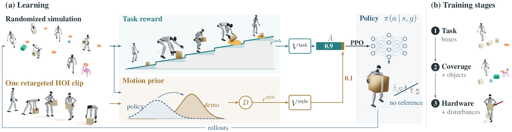
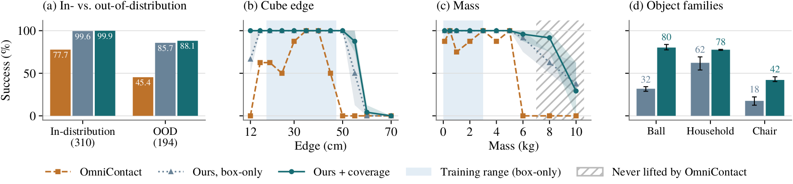

Try it yourself
The trained policies run live in your browser, in MuJoCo compiled to WebAssembly. Pick an object, drag the robot, the object or the goal, and press Run. While it runs, drag the object or the robot to push them, or move the goal.
Waiting to load…
Object and goal stay within 3.5 m of the robot's start.
On the real robot
A pick-up policy trained with the same reward and motion prior runs on the Unitree G1. It lifts two different boxes, and under a large downward pull it follows the box down and lifts it again. The recovery is not scripted: losing the object returns the robot to an earlier stage of the reward. For pick-and-place, a final training stage adds the G1's motor torque–speed limits, effort regularization and disturbances, and keeps 93.5% success in simulation.
reference tracking, hours of mocap
trained on boxes only
wider simulation, same reward and clip
Pick-and-place success on 504 shared scenarios with boxes up to 6 kg.
Abstract
Many recent humanoid loco-manipulation works mostly use reinforcement learning (RL) to track motion references, since rewards for long-horizon, contact-rich tasks are hard to design and explore. Each new object or placement then needs more motion capture, retargeting, or planning. We ask whether RL can instead learn a complete loco-manipulation task from task rewards, outperform current state-of-the-art works, and extend to other object types without per-object rewards or tuning. An object-agnostic staged reward built from contacts and geometry specifies pick-and-place, one human–object clip serves only as a motion prior, and randomized simulation supplies the variation. On 504 shared scenarios with boxes up to 6 kg, the policy trained only on boxes succeeds in 91.5% of episodes, and in 83.5% of those outside its training range in object size, mass, and distance, against 65.3% and 45.4% for OmniContact, a reference-tracking system trained on hours of motion capture. It also picks up object families it has never seen, and widening the simulated distribution, without new demonstrations or reward changes, raises success to 95.4% on boxes and 77.7% on other objects. The same formulation trains policies for hardware pickup. RL can thus act as the task learner, shifting the design burden from collecting reference motions to specifying task objectives.
Method

A staged progress reward
The task is split into six stages, approach, grasp, carry, place, release, placed, read from the scene at every step. The reward is a staircase over the stages with a dense ramp inside each one, so dropping the object simply sends the robot back down the staircase. Every stage is defined from contacts and geometry, so the same reward covers boxes, balls, household objects and chairs without grasp points or per-object tuning.
One clip as a motion prior
The only demonstration is one human clip of lifting, carrying and setting down a box, retargeted to the G1. Adversarial discriminators judge how the robot and the object move, never a trajectory to follow, and a separate critic keeps this style signal at 10% of the update: the prior shapes how the robot moves without deciding what it does.
Comparison with OmniContact
OmniContact executes planned contact flows with a tracking policy trained on hours of motion capture. We run its released policy in its own MuJoCo setup on 504 shared scenarios: nominal placements plus sweeps over size, mass, shape, distance and goal placement, 194 of them outside our box-only training range. An episode succeeds if the object is carried and released at rest within 0.35 m of the goal, without a fall.
| OmniContact | Box-only | + Coverage | |
|---|---|---|---|
| Success, all 504 (%) | 65.3 | 91.5 | 95.4 |
| inside range, 310 (%) | 77.7 | 96.5 | 99.9 |
| outside range, 194 (%) | 45.4 | 83.5 | 88.1 |
| Lifted (%) | 92.1 | 94.0 | 96.2 |
| Failed after lifting (episodes) | 135 | 13 | 4.0 |
| Falls (episodes) | 69 | 31 | 3.3 |
| Other object families (%) | – | 56.4* | 77.7 |
The gap opens after the lift
Both systems lift the object in over 92% of episodes, but OmniContact then fails in 135 of them and falls in 69, against 13 and 31 for our box-only policy. The difference comes while carrying, setting down and releasing the object.
Beyond the training range
Outside its training range the box-only policy still succeeds in 83.5% of scenarios, against 45.4%. OmniContact never lifts the 55 cm cube and completes none of the 12 or 50 cm cubes.

Same scenario: OmniContact fails, ours succeeds
Ours (box-only) on the left, OmniContact on the right, in the same physics.
Standard box, goal 1.2 m to the robot's left
Ours: ✓ placed at 2.4 sOmniContact: ✗ fell at 10.5 s
Box behind the robot, to its left
Ours: ✓ placed at 1.8 sOmniContact: ✗ fell at 11.7 s
Goal 3 m away
Ours: ✓ placed at 2.8 sOmniContact: ✗ fell at 10.2 s
Wide box: 70 × 40 × 30 cm
Ours: ✓ placed at 2.1 sOmniContact: ✗ never lifted the box2× speed
Large box: 55 cm cube, 1 kg + coverage
Ours: ✓ placed at 3.2 sOmniContact: ✗ never lifted the box2× speed
Flat box: 50 × 50 × 20 cm
Ours: ✓ placed at 5.5 sOmniContact: ✗ still holding at the end2× speed
Box 5 m away
Ours: ✓ placed at 6.9 sOmniContact: ✗ still holding at the end2× speed
Box directly behind the robot
Ours: ✓ placed at 2.0 sOmniContact: ✗ still holding at the end2× speed
Small box: 12 cm cube, 1 kg
Ours: ✓ placed at 5.0 sOmniContact: ✗ dropped the box 1.9 m from the goal
Goal behind the robot
Ours: ✓ placed at 2.5 sOmniContact: ✗ dropped the box 1.1 m from the goal
Box 4 m away
Ours: ✓ placed at 9.7 sOmniContact: ✗ dropped the box 3.2 m from the goal
Heavy box: 6 kg
Ours: ✓ placed at 2.1 sOmniContact: ✗ set it down 1.1 m from the goal2× speed
Coverage grows with simulation, not with data
Trained on boxes alone, the policy already completes 56.4% of episodes with balls, household objects and chairs it has never seen. Widening the simulation to include them, with the same reward and no new demonstrations, raises this to 77.7%, and success on the comparison scenarios to 95.4%.
What learning needs
Rewarded only for reaching the next stage, the policy never lifts the object.
Lifts the object in 89.5% of episodes but never delivers it.
Same success, but it learns the task about 1,000 iterations later.
Dense progress and walking guidance carry the learning; the one-clip prior mainly speeds it up.